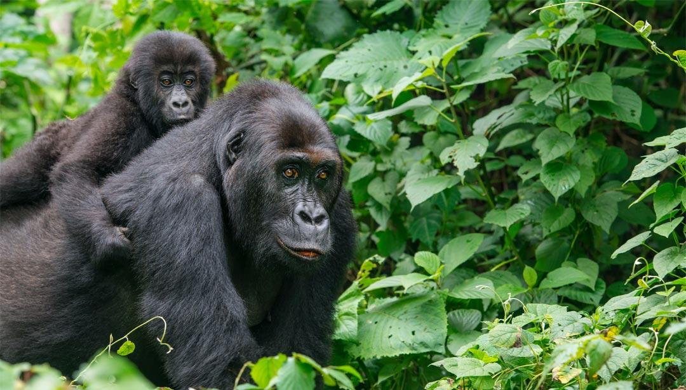

Das Überleben der Berggorillas ist jedoch noch immer stark bedroht. Im Laufe der Zählung fandern
und zerstörten die Forscherteams mehr als 380-Draht- oder Seilfallen im Virunga Nationalpark. In diesen für
Antilopen
aufgestellten Fallen können sich auch Gorillas verletzen. In einer dieser Fallen fanden die Forscher einen toten
jungen Berggorilla.
Die Herausforderungen in diesem höchst problematischen gebiet sind und bleiben also enorm. Dass die
Berggorilla-Population
im Ost-Konge trotz all dieser Gefahren wieder Wächst, zeigt aber dass sich der grosse gemeinsame Einsatz der
vielen verschiedenen
nationalen und internationalen Unterstützer und Organisationen. wie dem WWF auszahlt. Die bestehenden letzten
Rückzugsräume
der Berggorillas im afrikanischen Regenwald müssen erhalten bleiben.
Zusammen mit den 400 Tieren der einzigen anderen Berggorilla-Population im
Bwindi Impenetrable National Park in Uganda steigt damit die Gesamtzahl der weltweit
freilebenden Berggorillas auf 1004 Tiere. Damit sind die Berggorillas die einzigen Menschenaffen
der Welt, deren Bestand in freier Wildbahn wieder wächst.